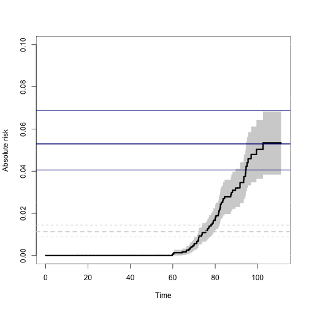

Implementation of various statistical models for multivariate event history data <10.1007/s10985-013-9244-x>. Including multivariate cumulative incidence models <10.1002/sim.6016>, and bivariate random effects probit models (Liability models) <10.1016/j.csda.2015.01.014>. Also contains two-stage binomial modelling that can do pairwise odds-ratio dependence modelling based marginal logistic regression models. This is an alternative to the alternating logistic regression approach (ALR).
Installation
install.packages("mets")
The development version may be installed directly from github (requires Rtools on windows and development tools (+Xcode) for Mac OS X):
remotes::install_github("kkholst/mets", dependencies="Suggests")
or to get development version
devtools::install_github("kkholst/mets",ref="develop")
Citation
To cite the mets package please use one of the following references
Thomas H. Scheike and Klaus K. Holst and Jacob B. Hjelmborg (2013). Estimating heritability for cause specific mortality based on twin studies. Lifetime Data Analysis. http://dx.doi.org/10.1007/s10985-013-9244-x
Klaus K. Holst and Thomas H. Scheike Jacob B. Hjelmborg (2015). The Liability Threshold Model for Censored Twin Data. Computational Statistics and Data Analysis. http://dx.doi.org/10.1016/j.csda.2015.01.014
BibTeX:
@Article{,
title={Estimating heritability for cause specific mortality based on twin studies},
author={Scheike, Thomas H. and Holst, Klaus K. and Hjelmborg, Jacob B.},
year={2013},
issn={1380-7870},
journal={Lifetime Data Analysis},
doi={10.1007/s10985-013-9244-x},
url={http://dx.doi.org/10.1007/s10985-013-9244-x},
publisher={Springer US},
keywords={Cause specific hazards; Competing risks; Delayed entry;
Left truncation; Heritability; Survival analysis},
pages={1-24},
language={English}
}
@Article{,
title={The Liability Threshold Model for Censored Twin Data},
author={Holst, Klaus K. and Scheike, Thomas H. and Hjelmborg, Jacob B.},
year={2015},
doi={10.1016/j.csda.2015.01.014},
url={http://dx.doi.org/10.1016/j.csda.2015.01.014},
journal={Computational Statistics and Data Analysis}
}Examples
library("mets") #> Loading required package: timereg #> Loading required package: survival #> Loading required package: lava #> mets version 1.2.8 data(prt) ## Prostate data example (sim) ## Bivariate competing risk, concordance estimates p33 <- bicomprisk(Event(time,status)~strata(zyg)+id(id), data=prt, cause=c(2,2), return.data=1, prodlim=TRUE) #> Strata 'DZ' #> Strata 'MZ' p33dz <- p33$model$"DZ"$comp.risk p33mz <- p33$model$"MZ"$comp.risk ## Probability weights based on Aalen's additive model prtw <- ipw(Surv(time,status==0)~country, data=prt, cluster="id",weight.name="w") ## Marginal model (wrongly ignoring censorings) bpmz <- biprobit(cancer~1 + cluster(id), data=subset(prt,zyg=="MZ"), eqmarg=TRUE) ## Extended liability model bpmzIPW <- biprobit(cancer~1 + cluster(id), data=subset(prtw,zyg=="MZ"), weight="w") smz <- summary(bpmzIPW) ## Concordance plot(p33mz,ylim=c(0,0.1),axes=FALSE,automar=FALSE,atrisk=FALSE,background=TRUE,background.fg="white") axis(2); axis(1) abline(h=smz$prob["Concordance",],lwd=c(2,1,1),col="darkblue") ## Wrong estimates: abline(h=summary(bpmz)$prob["Concordance",],lwd=c(2,1,1),col="lightgray", lty=2)
